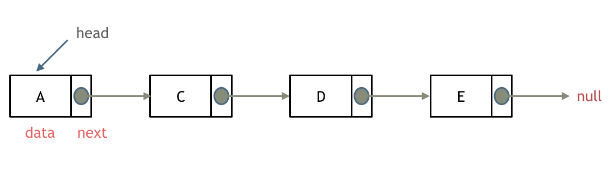
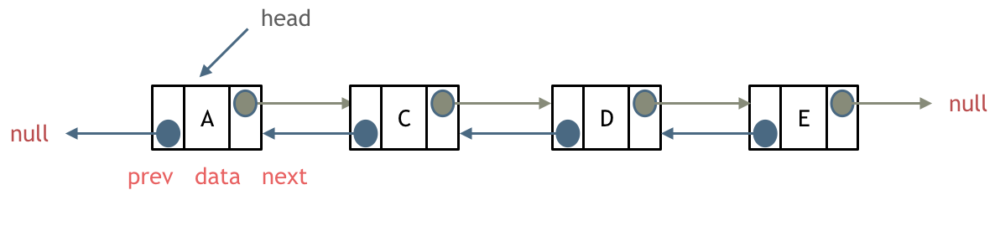
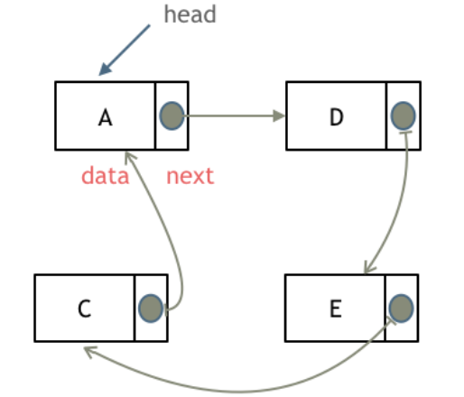
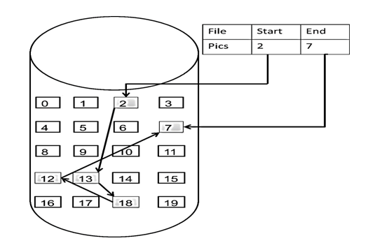
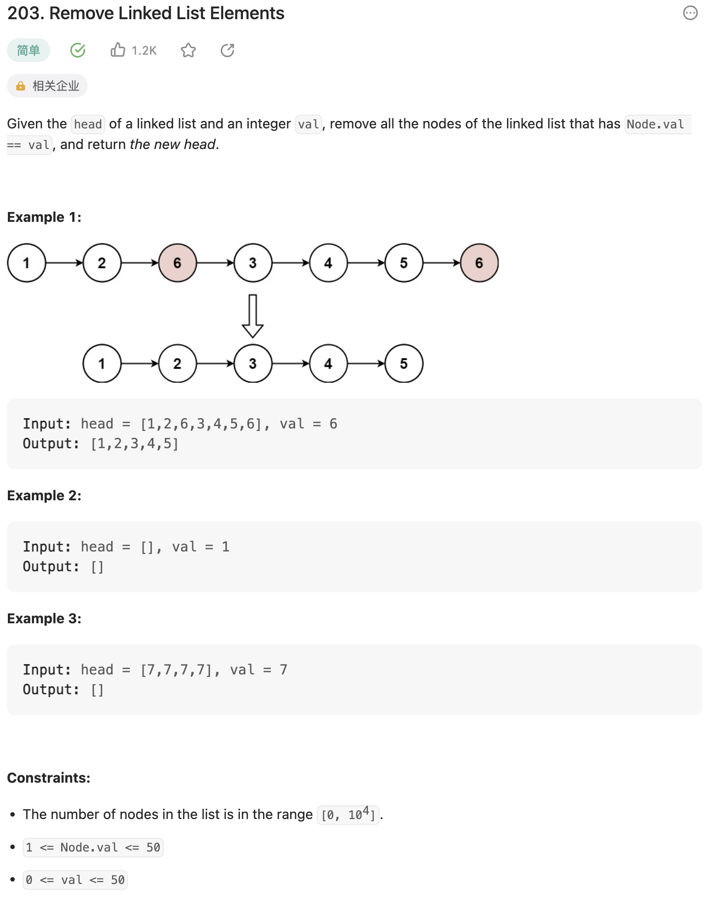
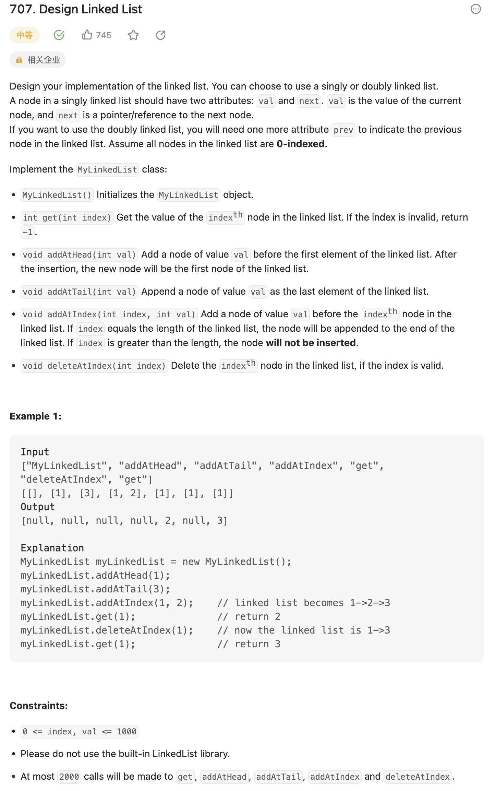
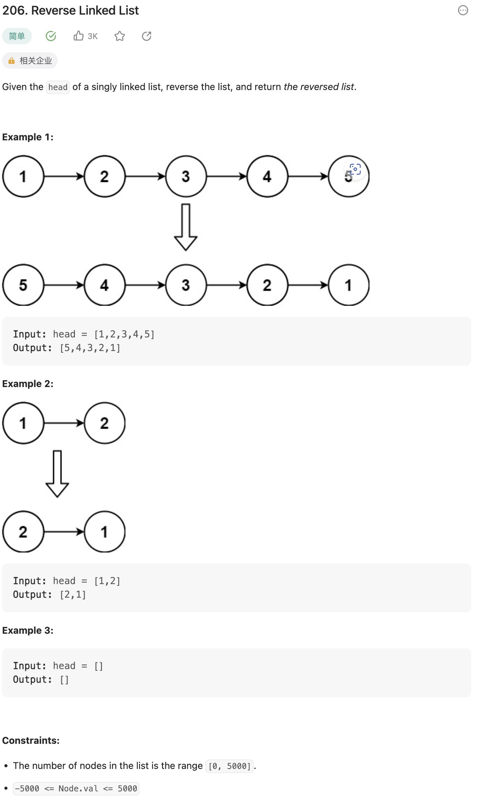

链表理论
链表，顾名思义，是链状的数据的集合。在计算机编程语言当中，链表通常的表现形式为：

单链表，图源自代码随想录
根据不同的节点构成，链表可以被分为：
如上面的图所示，即为单链表，“单”指的是单向，即一个节点除了所存储的数据外，只保留其下一个节点的指针。
在单链表的基础上，在每个节点上增加一个指向上一个节点的指针，将根据这个节点能查询到的节点扩展为前后节点。

双向链表
在双链表或者单链表的基础上，使链表首尾相连，就形成了一个循环链表。

循环链表
链表的存储方式与数组不同，数组通常是连续存储的，通过索引和数组起始位置即可以\(O(1)\) 的时间访问到指定的数据，但链表中的节点不是连续存储的，需要从链首指针开始，依次查询到指定位置才可以，需要花费\(O(n)\) 的时间。

链表存储示意图
根据链表的定义，一个常见的单链表的节点可以用C++表示为：
1 2 3 4 5 struct Node * {int data; Node (int x) : data (x), next (nullptr ) {}
一个常见的双链表节点可以用C++表示为：
1 2 3 4 5 6 struct Node * {int data; Node (int x) : data (x), prev (nullptr ), next (nullptr ) {}
203.移除链表元素
代码随想录链接
题目

LeetCode-203
删除链表中等于给定值的所有节点。
自己的想法
自己首先想到的还是使用链表原有的头和尾来完成，对头进行单独的判断处理，如果头携带值就等于给定值，则不断地把头设置为下一个节点，当头所携带的值不是给定值之后，再对链表后面进行处理，自己写的版本即为解法一。
解法一
1 2 3 4 5 6 7 8 9 10 11 12 13 14 15 16 17 18 19 20 21 22 23 24 25 26 27 28 29 30 31 32 class Solution {public :ListNode* removeElements (ListNode* head, int val) {NULL ; while (head != NULL && head -> val == val) { delete cur; while (cur != NULL ) { if (cur -> next != NULL && cur -> next -> val == val) { delete toDel; else { return head;
由于遍历了整个链表，故时间复杂度为\(O(n)\) ，使用了常数个额外变量，空间复杂度为\(O(1)\) 。
解法二
下面这种方法的思想和上面是一样的，只不过使用了一个假表首来使得代码实现起来比较简单。之前学过但是自己想的时候就是想不起来这种做法
1 2 3 4 5 6 7 8 9 10 11 12 13 14 15 16 17 18 19 20 21 22 23 24 25 26 27 28 29 30 class Solution {public :ListNode* removeElements (ListNode* head, int val) {new ListNode (0 );while (cur -> next != NULL ) {if (cur -> next -> val == val) {delete toDel;else {delete dummyHead;return head;
由于遍历了整个链表，故时间复杂度为\(O(n)\) ，使用了常数个额外变量，空间复杂度为\(O(1)\) 。
707.设计链表
代码随想录链接
题目

Leetcode-707
就是实现链表的增删查功能，改太简单了。上过数据结构的同学应该能非常熟练地完成才对。
自己的思考
尽量地多使用伪表首来实现功能，让代码的逻辑看起来更清晰一些。
解法
1 2 3 4 5 6 7 8 9 10 11 12 13 14 15 16 17 18 19 20 21 22 23 24 25 26 27 28 29 30 31 32 33 34 35 36 37 38 39 40 41 42 43 44 45 46 47 48 49 50 51 52 53 54 55 56 57 58 59 60 class MyLinkedList {public :struct Node {int val;Node (int val): val (val), next (nullptr ){}MyLinkedList () {new Node (0 ); 0 ; int get (int index) if (index >= _size || index < 0 ) return -1 ; while (index--) cur = cur->next; return cur -> val; void addAtHead (int val) new Node (val); void addAtTail (int val) while (cur -> next != NULL ) cur = cur -> next;new Node (val);void addAtIndex (int index, int val) if (index > _size) return ;if (index < 0 ) index = 0 ;new Node (val);while (index--) cur = cur -> next;void deleteAtIndex (int index) if (index >= _size || index < 0 ) return ;while (index--) cur = cur -> next;delete todel; private :int _size;
206.反转链表
代码随想录链接
题目

LeetCode-206
将一个给定的单链表的节点顺序依次翻转过来。
自己的思考
首先想到的是生成一个新的链表，依次分别将原链表中的数据不断在新链表的头部进行添加。但考虑到这样会造成额外的空间开销，就考虑使用链表的现有节点进行逆转。
解法
1 2 3 4 5 6 7 8 9 10 11 12 13 14 15 16 17 18 19 20 21 22 23 24 25 26 class Solution {public :ListNode* reverseList (ListNode* head) {if (head == NULL ) return NULL ; if (head -> next == NULL ) return head; new ListNode (0 ); while (cur != NULL ) { return dummyHead -> next;
遍历了链表，时间复杂度为\(O(n)\) ；由于没有产生新的链表，空间复杂度为\(O(1)\) 。